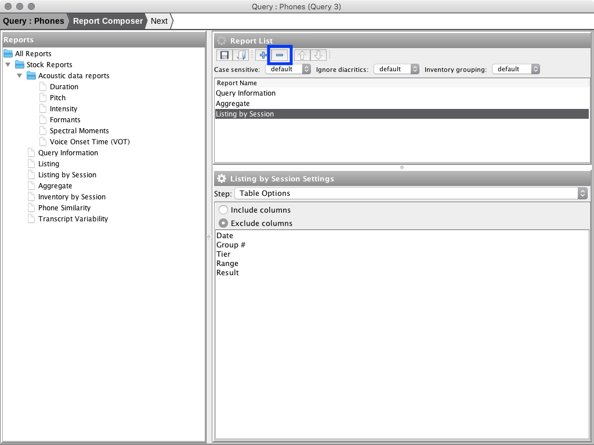
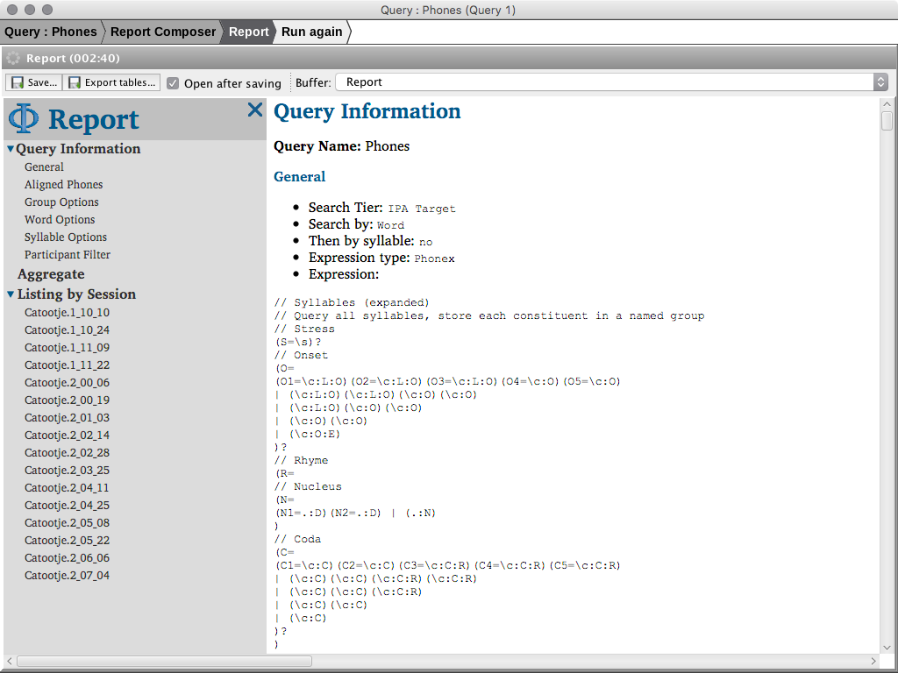

Query and Report Wizard
The query and report wizard is displayed when executing any query. The wizard has three main steps:
-
Query - enter query settings and execute query.
-
Report Composer - choose and configure report sections.
-
Report - Generate and view report.
Step 1: Query
The first step of the query wizard is to select sessions enter query parameters. Once
query paremeters have been entered, click the 'Run Query' button (shortcut
F7) to execute the query. After a query has completed you may
open individual session results or continue to Step 2: Report Composer.

Named Queries
Named queries are available via a combo-box menu in the top-right portion of the query parameters section. To save the current set of parameters as a new named query using the save button and the end of the toolbar and choose 'Name Query' from the drop down menu.

Query History
The parameters of each executed query are saved in a query history unique to each query type (e.g., Phones, Data Tiers, etc.) When opening the Query and Report wizard the most recent entry (i.e., the previously executed query) in the query history is loaded. Query history can be viewed using the 'Query history' button in the toolbar of the query form. Double-clicking an item in the displayed popup

Query Results
Queries are executed by clicking the 'Run Query' button. Result sets are displayed in a table on the bottom-left portion of the wizard (under the session selector) in a view named 'Query Results.' Queries can be executed more than once, the results of each execution will be titled 'Query 1', 'Query 2', 'etc.' You can select the active result set using the combo-box in the top-right corner of the Query Results view. Result sets may be discarded by clicking the '-' button in the top-right corner of the Query Results view (or by using the 'Query' window menu.)

Only the active result set will be used in the report steps of the wizard. The active result set is indicated in the title of the window.
Results from executed queries are shown in the session selector tree to allow comparisons between executed queries for individual sessions. Result sets may be viewed by double-clicking the result set in the tree or in the Query Results view. Results will be displayed in a table along with the associated session. For more information see View Result Set.
Step 2: Report Composer
The Report Composer step allows configuration of the generated report. The composer has three main views: Reports - a list of all available report sections; Report List - a list of report sections which have been added to the report configuration; and a Settings view in the bottom-right which allows configuration of report sections highlighted in the Report List view.

When opened, the Report Composer will load the previous report configuration for the query. If no previous configuration was found a default report consisting of the sections Query Information, Aggregate, and Listing by Session is loaded.
Save/Load Report Configuration
Report configuration can be saved and loaded from disk using the save/browse buttons in the Report List toolbar.

Add Section to Report
To add a report section to the current report configuration do one of:
Highlight the report section in the 'Reports' view and click the '+' button in the 'Report List' view
Double click the report section in the 'Reports' view
Drag the report section from the 'Reports' view into the 'Report List' view

Remove Section from Report
To remove a report section from the current report configuration:
Highlight the report section in the Report List view
Click the '-' button in the Report List toolbar

Reorder Report Sections
To reorder report sections do one of:
Highlight the section in the Report List view and use the up/down buttons in the toolbar
Use the mouse to drag and drop report sections in the Report List view

Global Report Options
Three global report options are available:
case sensitive
ignore diacritics
inventory grouping

Case sensitive
Modify case sensitivity where applicable. The options are:
default - use settings as defined in report section settings
yes - override report section settings and turn on case sensitivity where applicable
no - override report section settings and turn off case sensitivity where applicable
Ignore diacritics
Modify ignore diacritics settings where application. The options are:
default - use settings as defined in report section settings
yes - override report section settings and turn on ignore diacritics where applicable
no - override report section settings and turn off ignore diacritics where applicable
Inventory Grouping
Choose longnitudinal grouping column for aggregate inventories:
default - use settings as defined in report section settings
session - use session name as longnitudinal grouping column
age - use age as longnitudinal grouping column
Report Section Settings
To modify settings for a report section:
Highlight the report section in the Report List view
Use the bottom-right view to modify settings for the report section.
Step 3: Report
The HTML report is generated based on the report configuration when the Report step is initiated. Report generation may take several minutes - especially for reports with large amounts of data. Once the report is generated it will be displayed in the wizard.

Save HTML Report
To save a copy of the HTML report click the 'Save...' button in the toolbar.
If 'Open after saving' is selected the Report will be opened in the system default browser.
Export tables
To export report tables to CSV/Excel formats, use the 'Export tables...' button in the toolbar. There are three options:
Export tables to single Excel workbook
Export tables to folder (XLS) - export tables one per file in Excel format to specified folder
Export tables to folder (CSV) - export tables one per file in CSV format to specified folder

If 'Open after saving' is selected the Excel file or export folder will be displayed after export.